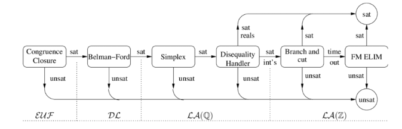

Theory solvers
Lazy SMT solvers can be seen as a collection of theory solvers. A theory solver must have the following characteristics:
- Incrementability: the T -solver incrementally checks new literals with a cost proportional to the size of the addition
- Backtrackability: the solver can undo steps and return to a previous state efficiently
- Literal deduction: the solver can perform deductions of literals not yet assigned in the input formula
- Explanation generation: when a conflict involving a literal is found, is necessary to have a (possibly short) explanation for performing conflict analysis and determine how far to backtrack.
Theory combination
Often, a formula may involve more than a theory and, in order to solve it, we need to combine different theories:
- purification: first, we divide the literals in groups, one for each theory
- Check and exchange: then we solve the theories indipendently and, if all of them are SAT, we exchange information between them to combine the solutions
Example:
Nelson-Oppen procedure
Let be signature and their theories, if are:
- signature-disjoint:
- stably-infinite: -Theory of sort is stably infinite if every -staisfiable -formula has a model interpreting as an infinite set
- convex: foreach set of -literals S we have:
Then we can chek ()-atisfiability with the deterministic Nelson-Oppen algorithm
pseudocode:
NOp(S):
S1, S2 = purify(S)
if not solve(S1) or not solve(S2):
return "UNSAT"
x, y = solve(S1)
if (x = y) and in E - S2:
if Solve(S2 + [(x = y)]):
return "SAT"
x, y = solve(S2)
if (x = y) and in E - S1:
if Solve(S1 + [(x = y)]):
return "SAT"
If we cannot rely on the convex property, we will need to use the non-deterministic Nelson-Oppen procedure which works through arrangements of shared constants, basically doing
case splitting between pairs of shared constants x, y, but it is exponential in the worst case scenario.
Extension
There are several extensions and enhancements to the SMT
framework. Hierarchical approach: the problem is stratified in layers L1, L2, ... of increasing complexity, solved by solvers of increasing expressiveness.

Case splitting
Sometimes it is easier to proceed "per case" and splitting the formula in different cases to solve independently.